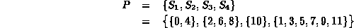
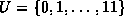
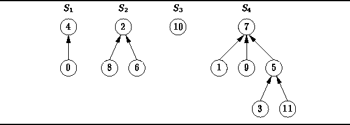
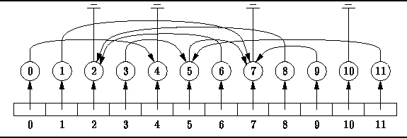

Data Structures and Algorithms
with Object-Oriented Design Patterns in Java
Data Structures and Algorithms
with Object-Oriented Design Patterns in JavaA partition is a set of sets. Consequently, there are two related issues to consider when developing an approach for representing partitions:
For example, Figure  shows how the partition
shows how the partition

can be represented using a forest. Notice that each element of the universal set  appears in exactly one node of exactly one tree.

Figure: Representing a partition as a forest.
The trees in Figure have some very interesting characteristics.
The first characteristic concerns the shapes of the trees:
The nodes of the trees have arbitrary degrees.
The second characteristic concerns the positions of the keys:
there are no constraints on the positions of the keys in a tree.
The final characteristic has to do with the way the tree is represented:
Instead of pointing to its children,
each node of the tree points to its parent!
Since there is no particular order to the nodes in the trees,
it is necessary to keep track of the position of each node explicitly.
Figure shows how this can be done using an array.
(This figure shows the same partition as in Figure ).
The array contains a node for each element of the universal set U.
Specifically, the  array element holds
the node that contains item i.
Having found the desired node,
we can follow the chain of parent pointers
to find the root of the corresponding tree.
array element holds
the node that contains item i.
Having found the desired node,
we can follow the chain of parent pointers
to find the root of the corresponding tree.

Figure: Finding the elements of a partition.
 Copyright © 1998 by Bruno R. Preiss, P.Eng. All rights reserved.
Copyright © 1998 by Bruno R. Preiss, P.Eng. All rights reserved.